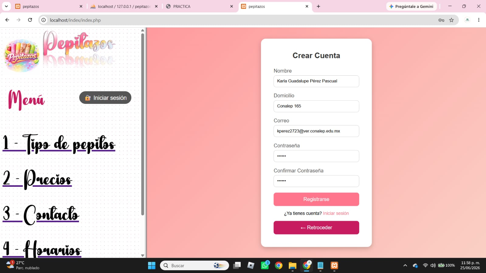

Registro de Usuarios con CSS
En esta práctica se analiza el diseño de un sistema de registro de usuarios utilizando HTML y CSS, el cual posteriormente puede conectarse a una base de datos para almacenar información.

El diseño está enfocado en una interfaz moderna tipo tarjeta, utilizando CSS para mejorar la presentación visual del registro de usuarios.
Se aplican estilos como degradados, sombras, bordes redondeados y efectos hover para mejorar la experiencia del usuario.
Este tipo de interfaz puede ser utilizada como base para sistemas de registro conectados a bases de datos en aplicaciones web.
La práctica permite comprender la importancia del diseño en interfaces de registro, enfocándose en la presentación visual antes de la integración con bases de datos.